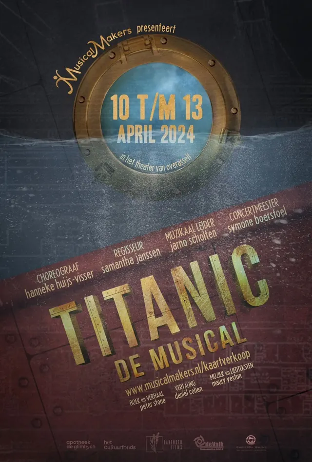
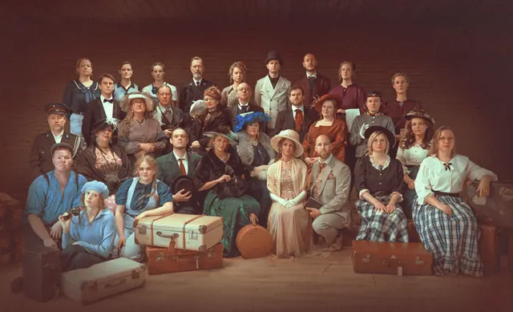

Nieuws ·
Titanic: Een Monumentale Musicalreis in Overasselt door MusicalMakers


Musicalvereniging MusicalMakers presenteert van 10 tot en met 13 april de musical “Titanic” in het theater van Overasselt. Deze indrukwekkende productie, met 30 acteurs en een 13-koppig orkest, brengt een unieke vertelling van het iconische verhaal. De focus ligt op het schip en de echte personages die aan boord waren tijdens de tragische reis. Het publiek zal zowel de weelde van de eerste klasse als de aangrijpende verhalen van derdeklasreizigers ervaren. Regisseur Samantha Janssen en choreografe Hanneke Huijs brengen deze traditionele musical tot leven in een moderne stijl. Kaarten zijn beschikbaar op www.musicalmakers.nl.